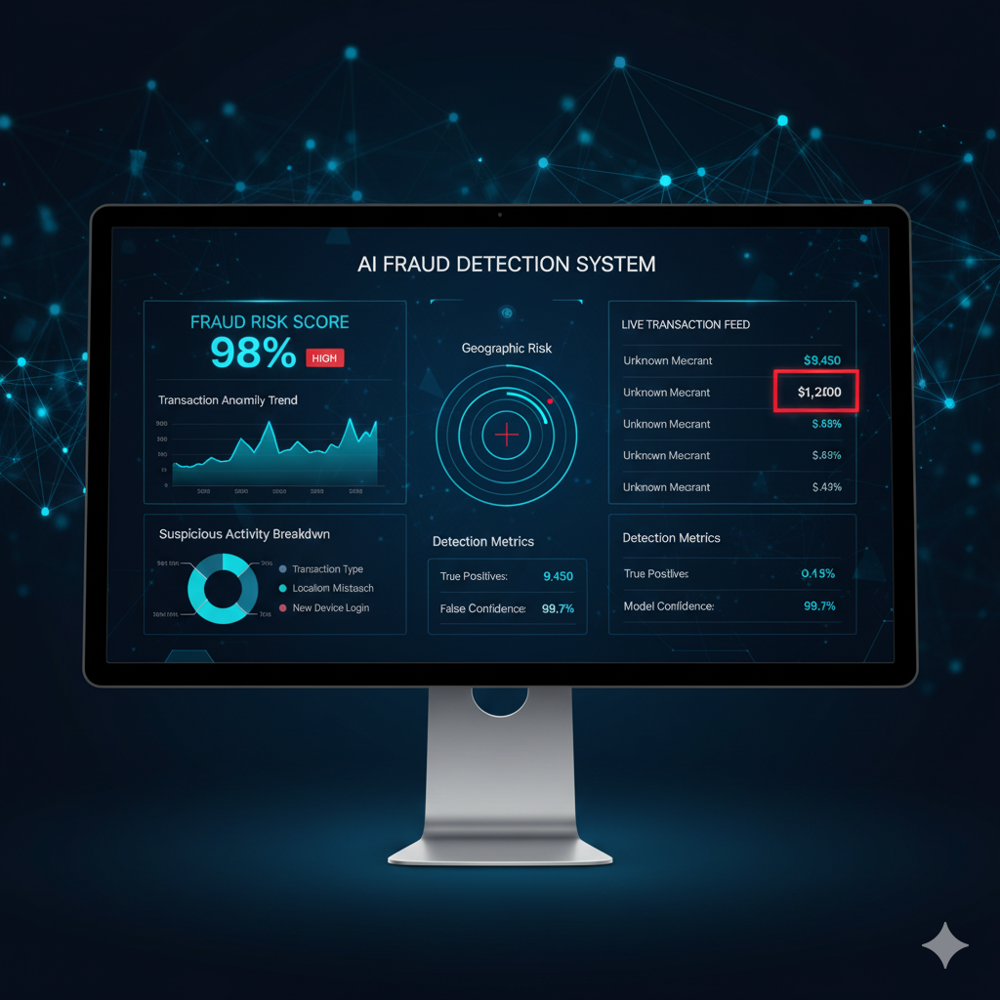

Project Overview
Handled heavy class imbalance with SMOTE, trained isolation forest and ensemble classifiers, and validated with precision-recall curves to detect fraud effectively.
Tools & Techniques
PythonSMOTEIsolation ForestScikit-learn
Key Outcomes
- High precision on minority (fraud) class using ensemble + resampling.
- Actionable alerts from model scores integrated into dashboards.